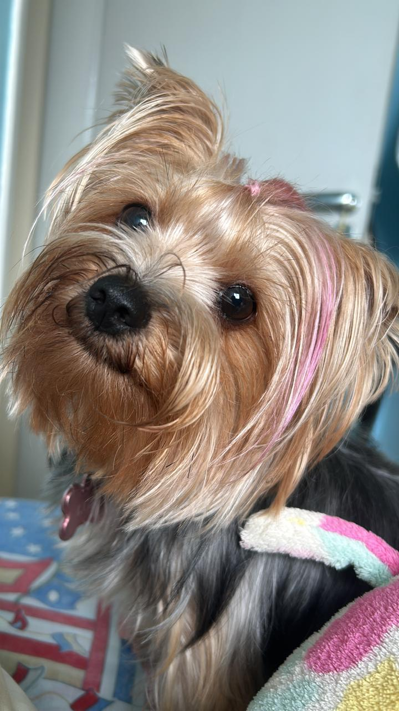
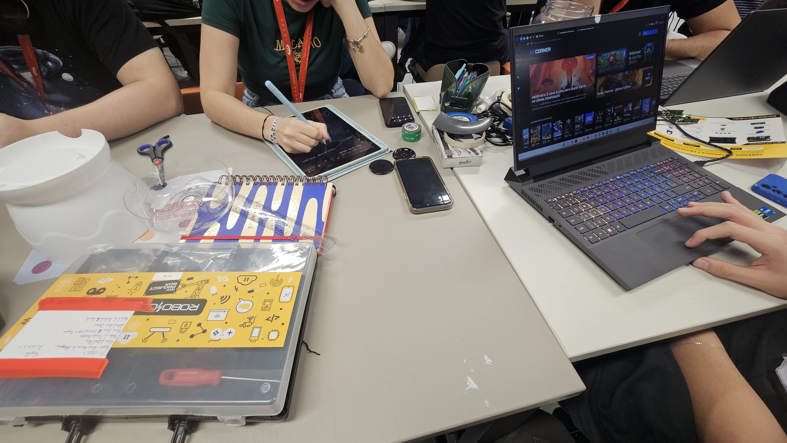
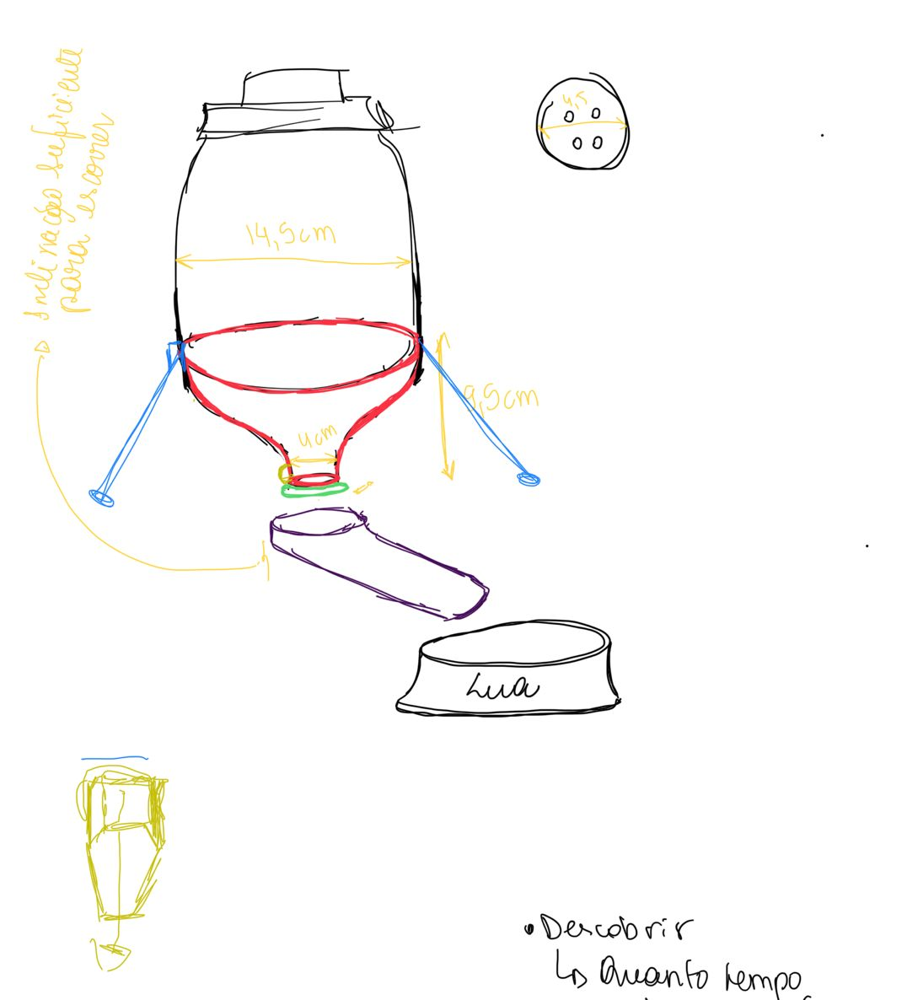
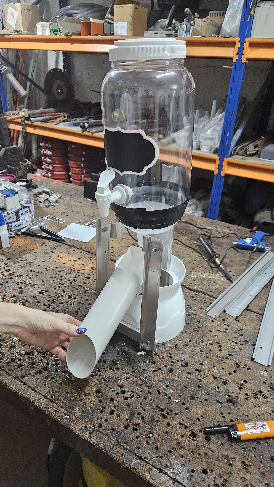
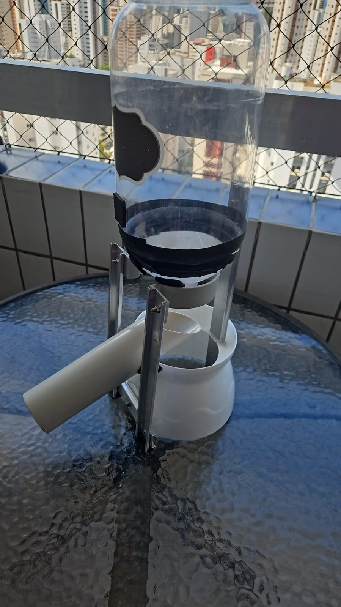
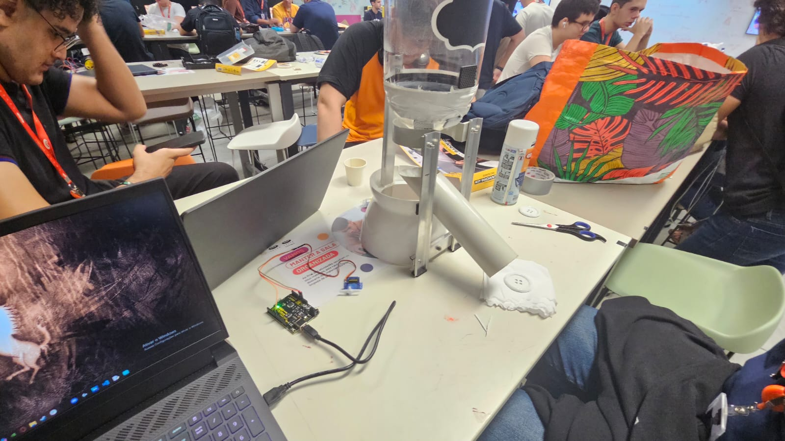
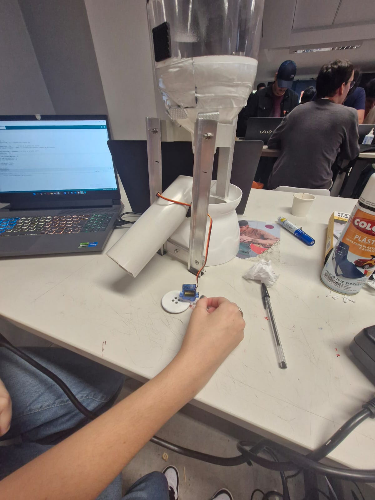
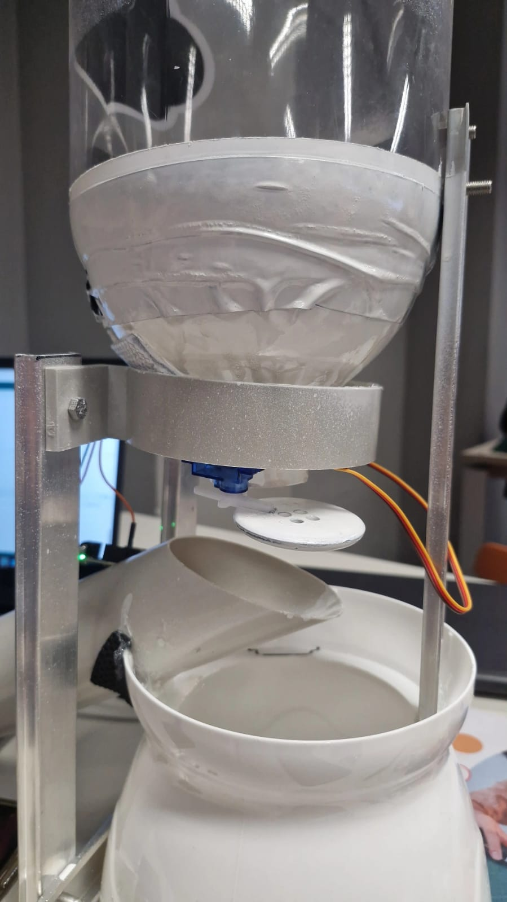

Dogumentação Visual 🐶🎥
🐶 Nossa Inspiração Canina
Assim como todo bom doguinho, que é curioso, criativo e está sempre disposto a aprender, buscamos trazer esse espírito para o nosso projeto com a nossa cachorrinha muito especial Lua. A ideia era embarcar nessa aventura com muita garra, focinho afiado e aquela vontade de descobrir, testar e, claro, se divertir no processo.
Cada etapa do desenvolvimento foi como seguir um rastro no parque às vezes fácil, às vezes cheio de obstáculos mas sempre com a determinação de quem não desiste de achar o melhor caminho. Entre farejadas, latidos de ideias e algumas patas tropeçando nos desafios, fomos construindo nosso projeto com aquele jeitinho canino: explorando, testando, adaptando e, principalmente, colocando muito amor e dedicação em cada detalhe. Afinal, se cachorro é sinônimo de lealdade e persistência, a gente não poderia ser diferente!
🐾 Passo 1 – Farejando as Ideias
No começo, espalhamos tudo pela mesa, igual cachorro quando faz aquela bagunça procurando o brinquedo preferido.
Foi o momento de farejar as ideias, pensar nas possibilidades e entender como íamos organizar cada parte do projeto. Nesse processo, rabiscamos, testamos e tentamos imaginar onde cada componente se encaixaria, sempre com aquele focinho atento, procurando o melhor caminho para começar.
🦴 Passo 2 – A Primeira Lambida na Ideia
Depois de farejar bastante, demos a primeira lambida na ideia, aquela experimentada básica pra ver se o osso era bom mesmo. Nesse momento, pensamos na primeira estrutura de como o projeto poderia funcionar.
Tentamos entender onde ficaria o coração do projeto o Arduino e como os outros componentes iriam se conectar. Foi como quando o doguinho começa a enterrar o osso, mas ainda não tem certeza se é ali o melhor lugar... algumas coisas pareciam fazer sentido, outras nem tanto, mas era o começo da trilha.
🐶✍️ Passo 3 – Desenterrando a Ideia do Papel
Depois de farejar bastante e dar aquela primeira lambida na ideia, chegou a hora de desenterrar o projeto do papel. Foi quando percebemos que, na teoria, tudo parecia um ossinho fácil de roer… mas na prática, a coisa ficava mais complicada. Começamos a tentar montar a estrutura, e logo percebemos que não era tão simples assim fazer tudo ficar firme. A suqueira, que parecia tranquila de posicionar, teimava em não ficar no lugar, balançava mais que cachorro querendo sair pra passear.

Cada tentativa era uma nova corrida atrás do rabo: ajusta aqui, desmonta ali, tenta de outro jeito… Até conseguir um suporte que segurasse bem, estável, sem risco de desabar no meio do funcionamento. Foi realmente o momento de colocar a patinha na massa, testando se tudo que imaginamos ia funcionar na prática.
🐾🔧 Passo 4 – Finalmente Começando a Latir!
Depois de muitas tentativas, tropeços e patas na massa, nosso projeto começou, enfim, a tomar forma. Foi aquele momento em que o doguinho para, olha e pensa: “Opa, acho que agora vai!”. A estrutura começou a ficar mais firme, os componentes começaram a se encaixar no lugar certo e, aos poucos, tudo foi deixando de ser só um rascunho cheio de rabiscos pra virar algo real.
Ainda não estávamos nem pensando nas partes elétricas ou no Arduino — o foco era garantir que a base ficasse estável, forte e do jeito certo. Até então, era mais madeira, parafuso, fita, cola quente e muita criatividade pra fazer o esqueleto do projeto parar de pé. Foi aquele típico momento que parece quando o cachorro começa a ver o portão abrindo… não chegou ainda, mas já dá pra abanar o rabo de empolgação!
🐕🔩 Passo 5 – Carcaça Pronta, Agora É Só Abanar o Rabo!
Depois de muito ralar, rosquear e farejar soluções, a carcaça finalmente ficou pronta! Ihuuu! 🎉 Agora sim parecia que nosso doguinho de projeto estava de pé, bonito e firme, pronto pra começar a ganhar vida. A estrutura estava no jeito, a suqueira no lugar certo, nada mais balançando ou querendo desmontar.
Foi aquele momento de olhar e pensar: “Agora sim dá pra começar a brincar de verdade!” Com a parte física resolvida, já começamos a planejar como seria a instalação dos fios, onde encaixar o Arduino e como fazer tudo isso funcionar como imaginávamos. Mas, pelo menos, uma coisa era certa: a parte mais desafiadora da montagem física, aquele pega-pega de tentar deixar de pé, finalmente ficou pra trás. Nosso projeto agora já tinha cara, corpo e, em breve, ia começar a ganhar alma (ou melhor… código 🐾💻).
⚡🐶 Passo 6 – Ligando os Fios e Fazendo o Bicho Funcionar!
Com a carcaça pronta, parecia que tudo ia ser mais fácil… parecia. 😅 Foi só começar a pensar na parte elétrica que percebemos que o desafio tava só começando. A dificuldade aumentou, porque agora não era só questão de deixar o projeto bonito e de pé, mas sim de fazer ele funcionar de verdade.
Tivemos que parar, coçar bastante a orelha e pensar: “Tá… e agora, como a gente encaixa tudo isso aqui?” Era entender onde colocar o Arduino, como posicionar os fios pra não atrapalhar, como ligar cada componente do jeito certo e, principalmente, como transformar tudo isso em um sistema que realmente funcionasse.
Foi aquele momento de ficar olhando pro protótipo, pros fios, pro Arduino e pensar: “Isso aqui vai dar trabalho, hein…” Mas seguimos firmes, focados e prontos pra mais essa etapa. Afinal, nenhum doguinho aprende truques novos sem esforço! 🐾⚙️💡
🔌🐾 Passo 7 – Conectando Tudo: Hora de Cruzar os Fios (e os Dedos)
Depois de tanto esforço pra deixar a carcaça no jeito, chegou aquele momento crucial: ligar tudo. Foi fio pra lá, jumper pra cá, olhando pro Arduino e pensando “Se der ruim, espero que só seja um susto e não fumaça...” 😂.
Começamos a conectar cada parte, pensando bem onde colocar os fios pra não atrapalhar o funcionamento nem deixar tudo parecendo aquele novelo que cachorro ama brincar. Além de encaixar, precisávamos entender direitinho se a alimentação tava correta, onde ligava cada componente e, claro, se o Arduino tava recebendo os comandos certinhos.O frio na barriga bateu, mas seguimos firmes, cruzando os fios… e os dedos! 🐶⚙️💡
🎉🐶 Passo 8 – Teste Final: Deu Certo, Pode Abanar o Rabo!
Depois de tanto trabalho, tropeços, tentativas e muitos fios cruzados, chegou a hora do grande teste... E não é que FUNCIONOU? 🥳🐾 Ver o projeto funcionando foi, sem dúvidas, o momento mais feliz. A sensação foi igual quando o cachorro escuta o barulho do pacote de ração abrindo: pura alegria e satisfação!
Tudo que antes parecia tão distante desde pensar na estrutura, entender onde colocar o Arduino, até fazer as conexões agora tava ali, na nossa frente, funcionando direitinho. Ver que deu certo fez todo o esforço valer a pena, e ficamos muito orgulhosos do nosso trabalho. 🐕❤️
🐾 Projeto finalizado, com rabo abanando e tudo no lugar! Agora é só comemorar com muitos latidos e partir para a próxima aventura. Obrigado por acompanhar nossa jornada canina! 🐶